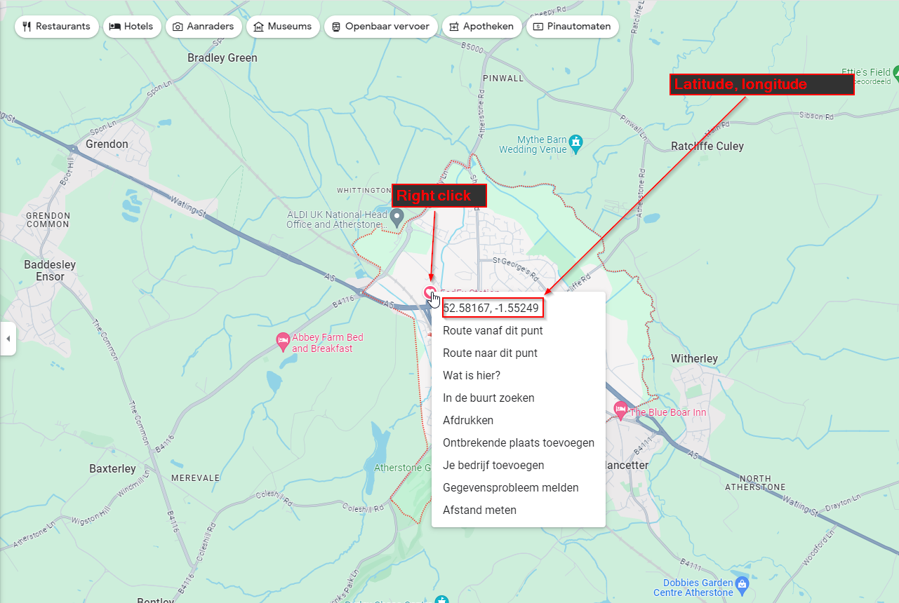

Encyclopedia¶
Movement¶
In transportation and logistics, a Movement refers to the complete journey of a vehicle from its point of origin to its destination.
It encompasses all aspects of the transit, including the vehicle’s departure time from the origin, the route taken, and the arrival time at the
destination. This term is broadly applicable to various modes of transportation, such as cars, trucks, trains, ships, and aircraft. Each movement is
characterized by its unique set of parameters such as distance, duration, and the nature of goods or passengers being transported, providing a
comprehensive overview of the transit process.
Changeover¶
In the realm of transportation, a Changeover or a multi-leg movement, refers to a sequence of interconnected
movements, where each movement is linked to the next by specific departure and arrival times. These sequences are carefully coordinated to ensure smooth
transitions between each leg of the journey. The timing between successive movements, known as changeover time, is critical. It allows
time to process and exchange trailer between drivers. However, if one movement in the sequence is delayed, it might necessitate the adjustment of subsequent
movements to maintain the integrity of the overall schedule.
In FedEx, the creation of changeovers primarily addresses challenges associated with lengthy (exceeding 4.5 hours of driving time) and time-sensitive movements. Consider, for instance, the transportation of a unit from Kingsbury, UK, to Edinburgh, UK. This journey exceeds six hours, making it impractical to complete in compliance with regulations without being double-manned. To circumvent this issue, a changeover is strategically implemented. A typical solution involves establishing a transfer point, such as in Preston. Here, coordinators can efficiently arrange for the continuation of the journey, managing connections and transfers to prevent delays. This system ensures that longer journeys remain feasible and compliant with regulations within operational constraints.
Let us deep dive in the Preston example. Assume that the above mentioned changeover involves two linked movements (M1 and M2):
M1: The first movement is from Kingsbury to Preston. The truck departs at 22:00 and arrives at 00:25 the next day.
M2: The second movement, from Preston to Edinburgh, begins shortly after. This truck is scheduled to leave Preston at 00:40 and reach Edinburgh at 04:50.
Between these two movements, there is a planned 15-minute changeover time, specifically allocated for transferring the trailer. This changeover time is crucial for ensuring a smooth transition between the movements.
Imagine a situation where the first truck, designated for the Preston leg of a journey, experiences a delay of an hour. Consequently, the schedule for the subsequent movement, heading towards Edinburgh, must be recalibrated where possible. This rescheduling is essential to guarantee that the trailer departs for Edinburgh on time. Such a cascade of delays and the required adjustments in the timings of successive movements epitomize what we term a Changeover in truck transportation. Essentially, a Changeover is the coordination and realignment of sequential movements to ensure timely deliveries, despite disruptions or delays in earlier segments.
In the context of LION, a changeover is displayed by its location string. In the example above, the loc_string would be KG4.PN4.EDH.2200.
Every changeover, has a final destination called Transportation Unit or TU Destination which is a location where the trailer is destined for.
Tour (Shift)¶
A tour or shift, in the Context of LION, is a sequence of Movement s that are conducted by a single driver. This definition emphasizes the role of the driver in connecting each movement in the sequence.
Traffic Type¶
In the context of transportation, particularly within a transportation or logistics company like FedEx Express, the term Traffic Type refers to the classification of a transportation lane or route based on the nature of the cargo movement or the mode of transport being used. This classification helps in organizing and managing the logistics process more efficiently. Here’s a brief explanation of some of traffic types:
Air Exports: These are lanes/movements for goods being exported out of a country from Origin to an air gateway where they are either loose loaded or caged.
Air Export - ULDs: These are lanes / movements for goods being exported out of a country from Origin to an air gateway in ULD’s
Air Exports - ADR: These are lanes / movements for goods being exported out of a country from Origin to an air gateway but require an ADR qualified driver (dangerous goods)
Air Import: These are lanes / movements for goods being imported into a country from an air gateway to a destination where they are either loose loaded or caged
Air Import - ULD: These are lanes / movements for goods being imported into a country from an air gateway to a destination in ULD’s
B Service: These are lanes / movements for goods that have a 2 day service for sorting the next shift
Empty: An empty movement is essentially a repositioning movement where an empty trailer is left in exchange for a loaded trailer
Empty - Cages: An empty movement is essentially a repositioning movement where an empty trailer is left in exchange for a loaded trailer but the location it goes to requires cages replenished
Empty - palletts: An empty movement is essentially a repositioning movement where an empty trailer is left in exchange for a loaded trailer but the location it goes to requires palletts replenished
Empty - ULDs: An empty movement is essentially a repositioning movement where an empty trailer is left in exchange for a loaded trailer but the location it goes to requires ULD’s replenished
Empty Double Deck: Same as empty but it’s a double deck trailer
Express: These are lanes / movments that carry domestic shipments for next day delivery
Express - ADR: These are lanes / movments that carry domestic shipments for next day delivery but require an ADR qualifies driver (dangerous goods)
Express - Scottish: These are lanes / movments that carry domestic shipments for next day delivery containing Scottish deadline traffic. Scottish is only permitted on designated lines as there is an earlier cut off time so the hubs can identify these and prioritise them for sorting
Express Double Deck: These are lanes / movments that carry domestic shipments for next day delivery but are on a double deck trailer
Express Double Deck - Scottish: These are lanes / movments that carry domestic shipments for next day delivery containing Scottish deadline traffic but are on a double deck trailer. Scottish is only permitted on designated lines as there is an earlier cut off time so the hubs can identify these and prioritise them for sorting
Returns: A loaded trailer containing shioments to be returned to a specific customer
Road Exports: These are lanes / movements for goods being exported out of a country from Origin to a road transit hub
Road Imports: These are lanes / movements for goods being imported into a country from a road transit hub to a destination
Shuttle: These are lanes / movements for goods being shuttled between locations where the origin does not have a connection to the destination
Shuttle - Scottish: These are lanes / movements for Scottish goods being shuttled between locations where the origin does not have a connection to Scotland. This allows the receiving hub to prioritise the trailer for sorting
Solo: This is where a tractor unit travels on its own with no trailer attached
Each of these traffic types has its unique requirements, regulations, and operational procedures. By categorizing lanes into these types, a transportation company can better streamline its operations, allocate resources, and provide specialized services according to the specific needs of each lane.
Controlling location (Station)¶
The controlling location (station) refers to the site responsible for managing drivers and additional resources to and from the customer’s location. From Driver Plan reporting perspective, any departure and arrival information from and to customer’s location will be shared with the controlling station.
Latitude and longitude¶
Latitude and longitude are a pair of numbers (coordinates) used to describe a position on the plane of a geographic coordinate system. The numbers are in decimal degrees format and range from -90 to 90 for latitude and -180 to 180 for longitude. For example, Washington DC has a latitude 38.8951 and longitude -77.0364.
To obtain a location coordinates, you can go to Goolge Maps, search for the location. Once happy with the location and corresponding details, right click on the spot on the google map and copy the coordinates as displayed in the screen shot below. It is important to get these numbers as accurate as possible by zooming in and making sure that the right address and point is selected.
{kind=link}
Turnaround time¶
This term refers to the essential interval incorporated into each stopping point of a driver’s work cycle within a shift. It is composed of two distinct phases:
Driving Turnaround Time: This is the time allocated for a driver to gradually reduce speed upon reaching a facility and to come to a complete halt within the premises. It ensures a smooth and safe transition from active driving to a stationary state.
Non-Driving Turnaround Time: After the Driving Turnaround Time, a designated period is provided for the driver to manage necessary administrative tasks. This includes processing paperwork relevant to the upcoming movement. This phase is crucial for the preparation required before embarking on the next segment of the journey. Additionally, this time may be utilized, if there are trailers to be swapped, for conducting vehicle or trailer checks prior to re-entering public highways. This ensures not only the administrative readiness but also the operational safety of the vehicle for the ensuing travel.
Overall, Turnaround Time at each stopping point in a driver’s shift or tour integrates the transition from driving to rest (Driving Turnaround Time) and the preparation for the next driving segment (Non-Driving Turnaround Time), ensuring operational efficiency and safety.
Debrief time¶
Debrief time in the context of a transportation company is a designated period at the beginning and end of a shift where drivers can prepare for their workday and then later reflect on and discuss it. Debreif time is considered as part of “Duty” hours:
- Pre-Shift Debrief (30 minutes at the beginning of the shift):
Purpose: This time is allocated for preparing for the day’s work. It often involves reviewing the day’s schedule, checking vehicles or equipment, and discussing any important updates or safety reminders.
Activities: Employees might review their routes, receive any last-minute changes, check the condition of their vehicle, and ensure they have all necessary equipment. It’s also a time for supervisors to communicate any relevant information about the day’s tasks.
- Post-Shift Debrief (30 minutes at the end of the shift):
Purpose: This period is for reflecting on the day’s work, discussing any challenges or incidents, and providing feedback. It’s an opportunity to learn from the day’s experiences.
Activities: Employees may report on the status of their tasks, any issues encountered, and suggestions for improvement. It’s also a time to complete any necessary paperwork and ensure that vehicles and equipment are left in good condition for the next shift.
Effective communication, safety, and continuous learning is critical. It’s not just about the tasks but also about engaging with colleagues and supervisors to share experiences and gain insights.
eGIS¶
Please Consulte Esri Geographic Information Systems (eGIS)
Esri Geographic Information Systems (eGIS)¶
Esri is a company specializing in Geographic Information Systems (GIS) software. They provide powerful mapping and analytics tools, known for their ArcGIS platform. Esri’s technology is used for visualizing, analyzing, and interpreting geographic data to understand relationships, patterns, and trends. They serve a wide range of industries and purposes, offering solutions for location intelligence and spatial analytics, thereby aiding in decision-making and problem-solving.